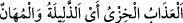
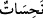
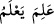
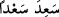
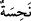
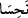
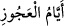
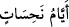

bu uğursuz ve hayırsız kasırga ile onlara burunlarını sürtecek dünyevî bir azap tattırmış
olalım. Azâb lâfzının (
) kelimesine izâfe edilmesi, -bir şeyi, mübâlâğa için masdarla
tavsîf etme metodu ile- mevsûfun sıfatına izâfe edilmesi kabilinden olup
(
) takdîrindedir ki rezîl ve değersiz olan aslında azâbın kendisi
değil, azâba çarptırılanlardır.
“o uğursuz günlerde” (
) kelimesi, -her ikisi de (
) vezninde olan- (
) fiilinin zıddı olan (
) kökünden gelen (
)’ün çoğuludur. (
) de
Zühal ve Merih’tir; Şubat’ın sonu ile Şevval’in sonu çarşambadan çarşambaya kadarki
sekiz gün yedi gece de böyledir.
Yani Şevval’in son sekiz günü Çarşamba sabahından bir sonraki Çarşamba günü
güneşin batışına kadar kasırga esmiştir ki bu günlere
(
) ‘âciz kalınan günler’ de denir. “Hâkka sûresi”nde genişçe ele alınacaktır.
Dahhâk der ki: Allah Âd’lılara tam üç yıl hiç yağmur yağdırmadı, rüzgârlar yağmur
getirmeksizin esip durdu.
Câbir b. Abdullah’dan (r.a.) mervîdir ki: Cenâb-ı Hak bir kavme hayır murâd
ettiğinde, çok rüzgâr estirmez ve yağmur yağdırır, bir kavme de şer murâd ettiği zaman
yağmuru tutar ve sürekli esen bir rüzgâr musallat eder.
(
) ibâresi, hayır nâmına hiçbir özelliği bulunmayan dondurucu ve uğursuz
günler anlamındadır. Demek ki bu günlerin uğursuzluğu Allah Teâlâ’nın hiç ara
vermeksizin ve sürekli aynı tempoda rüzgâr estirmesi ve Âd kavmini bununla helâk
etmesidir. Yoksa müneccimlerin (astrolog) bu âyete de dayanarak iddiâ ettikleri gibi
bazı günlerin haddizâtında uğursuz, bazı günlerin de haddizâtında uğurlu olması diye bir
şey yoktur. Zîrâ zamanın parçaları hakîkatte birbirinin aynıdır; içinde gerçekleştirilen
tâat ve mâsiyetlerle farklılaşmak dışında birbirlerinden hiçbir farkları yoktur. Söz
gelimi, haddizâtında uğurlu sayılan Cuma günü, o gün itâat eden için uğurlu, isyada
bulunan için ise uğursuzdur. Adamın biri Asma’î’nin yanında “Zaman bozuldu” demiş
de Asma’î şu cevabı vermiş:
Şu ‘iki yeni’ (gece ile gündüz) yok mu, hani sürekli gidip gelen
İkisi de bozulmaz; insanlardır asıl bozulan.
Şöyle de denmiştir:
Zamanımızı kınarız; kusur bizdedir oysa
Zaman da bizi kınardı -kesin- bir dili olsa
Şeyh Sadreddîn Konevî (k.s.) der ki: Giysi, (astrolojik açıdan) düşük bir günde
kesilip dikilirse, giysiye birtakım alçak özellikler bulaşır.
Fakîr (Bursevî) der ki: Hazret bu sözüyle muhtemelen -azâbın sürekli gerçekleştiği